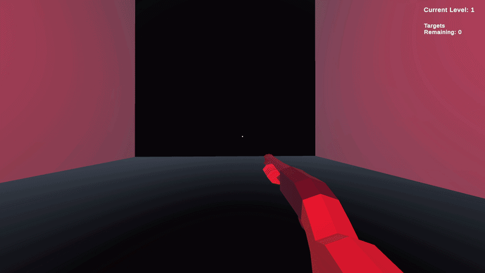
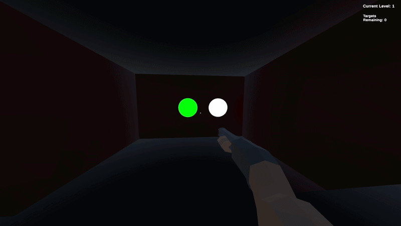

ImpulseSystem
ImpulseSystem is a physics-based movement prototype developed in Unity as part of my Advanced Specialised Project at SAE Institute London. The project focuses on implementing advanced physics mechanics inspired by Shotgun Cop Man, where player movement is powered entirely by shotgun recoil forces rather than traditional locomotion systems.
This is a technical prototype designed to showcase mechanical depth and physics implementation rather than a complete game experience. The core focus is demonstrating mastery of physics-based gameplay programming and custom impulse systems.

Project Overview
Traditional first-person shooters use standard movement systems where players walk and sprint using conventional WASD controls. ImpulseSystem reimagines FPS movement by making the shotgun itself the primary method of traversal. Every shot fires a powerful recoil impulse that propels the player through the environment, requiring mastery of momentum, directional force, and physics-based control.
The game doesn't focus on combat or narrative - instead, it's a pure mechanics prototype designed to explore how physics-based propulsion can create engaging, skill-based gameplay. Players must learn to control momentum, manage air time, and use environmental awareness to navigate increasingly challenging spaces.
Specialisation and Learning Goals
This project was undertaken as my Advanced Specialised Project to identify and develop a specific area of expertise within gameplay programming. I chose physics-based movement systems and recoil mechanics as my focus because this represents a niche specialisation in game development that aligns with my long-term career direction in advanced gameplay systems.
By implementing a physics-driven prototype rather than a narrative game, I demonstrate independent decision-making about what constitutes meaningful learning. This project proves I can identify gaps in my skillset - advanced physics programming and impulse-based systems - and systematically build expertise in those areas through focused, technical work.
Technical Implementation
Impulse System and Physics

The core of ImpulseSystem is a physics-driven movement engine where shotgun recoil acts as the primary locomotion force. Rather than traditional WASD movement, players fire their weapon to generate directional impulses that propel them through space.
- Rigidbody-based character controller using impulse forces instead of velocity modification
- Directional recoil calculation based on weapon orientation and firing vector
- Custom drag and gravity scaling to maintain gameplay feel while preserving physics accuracy
- Air control system allowing mid-flight momentum adjustment through rapid firing
- Collision response refinement to prevent clipping and maintain fair play
Shooting System and Raycasting

The weapon system combines physics-driven recoil with precise raycast-based shooting mechanics. Players can fire in any direction with the mouse, instantly generating an impulse force while simultaneously detecting hits on targets.
- Raycast-based hit detection for instant, responsive feedback
- Bullet trail visual effects showing firing direction and momentum
- Hitmarker system providing audio-visual confirmation of successful shots
- Weapon responsiveness tuned for tight, predictable control
- Right-click alternative firing for variety in movement options
Target System and Feedback

Targets serve as both gameplay objectives and visual feedback systems. They drive player movement by forcing engagement with specific areas, while their state changes provide clear progression signals through lighting and highlighting systems.
- Target highlight system with outline rendering to show interactable objects
- Color-coded feedback transitioning from red to green to indicate completion
- Dynamic target highlighting when hit or approaching completion
- Hit detection system tracking which targets have been eliminated
- Visual impact effects on successful target elimination
Level Progression and Checkpoints
8 progression levels teach momentum control systematically, from basic propulsion to advanced precision platforming. Each level introduces new challenges while building on previous mechanics.
- 8 progression levels with increasing mechanical difficulty
- Checkpoint system allowing players to respawn at specific progress points
- Door system unlocking based on level completion and target elimination
- UI system tracking current level, target count, and progression status
- Progressive difficulty curve teaching fundamentals before demanding precision
Aim Training Arena

After completing all 8 levels, players can access the dedicated Aim Training arena - a specialized environment designed to measure and improve accuracy. A 3x3 grid of targets spawns dynamically, requiring players to quickly identify and eliminate targets while managing momentum and positioning.
- 3x3 target grid with randomized spawn positions and patterns
- Dynamic target appearances testing reaction time and spatial awareness
- Hit detection system tracking accuracy percentage and performance metrics
- Real-time display of accuracy percentage in top-right HUD
- Future score system planned to evaluate multiple performance metrics including acquisition time and consistency
Future Enhancements
Currently, the aim training system tracks accuracy data during gameplay. In future iterations, I plan to implement a comprehensive score system that will evaluate multiple performance metrics including accuracy percentage, hit consistency, target acquisition time, and overall speed. These metrics will be displayed prominently during and after training sessions, allowing players to track progression and identify specific weaknesses in their mechanics.
Additional planned features include leaderboard integration, detailed performance analytics, and comparative analysis tools to help players identify improvement areas. The score system will be designed with replay analysis in mind, allowing players to review their performance and understand the physics decisions that led to successful or failed attempts.
Why This Approach?
I chose to build a physics prototype rather than a polished game because this project is about demonstrating technical expertise and independent learning. Rather than spreading effort across narrative, art, and game feel, I focused resources entirely on mechanical depth and physics implementation.
This decision reflects professional game development practice where specialists deeply understand specific systems. By becoming an expert in impulse-based movement, I've created a portfolio piece that clearly demonstrates mastery of a niche but valuable skillset. Future employers can see concrete proof of my ability to implement complex physics systems and solve problems in real-time.
The technical design document, complete with physics calculations and iteration notes, proves I understand the theoretical foundation of my implementation. The progression from teaching levels to aim training arena shows I think about player experience even within a mechanics-focused prototype. This combination - deep technical knowledge plus thoughtful design - is exactly what studios look for in gameplay programmers.
Learning Outcomes Achieved
K1 - Area of Specialisation: Physics-based movement systems represent my chosen specialisation within gameplay programming, grounded in industry analysis of momentum-based FPS mechanics.
K2 - Independent Evaluation: Weekly development logs documented iteration cycles, problem identification, and solutions throughout the project. Playtesting feedback was systematically collected and implemented.
K3 - Subject-Specific Knowledge: Technical design documentation explains force calculations, impulse application, and physics tuning decisions. Code architecture demonstrates understanding of rigidbody systems and custom physics implementation.
S1 - Analytical Skills: Development logs show clear identification of weaknesses (physics balancing, air control tuning) with documented improvement strategies.
S2 - Industry Learning: Professional documentation standards, performance optimization targeting 60 FPS, and structured playtesting demonstrate real-world development practices.
S3 - Effective Presentation: The playable prototype, technical design document, development logs, and presentation materials clearly communicate the project vision and technical achievements.